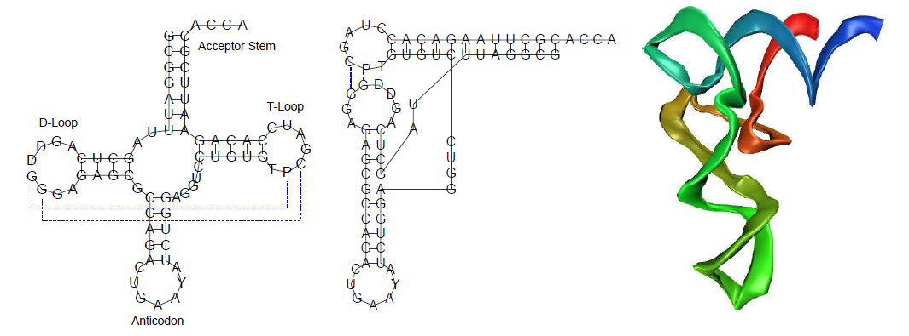
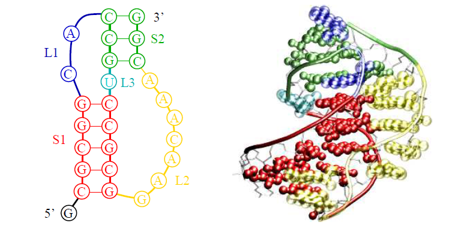
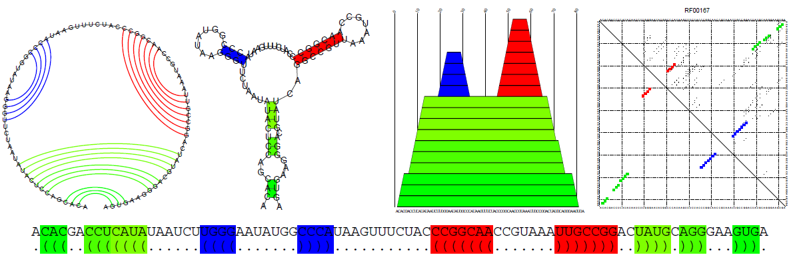
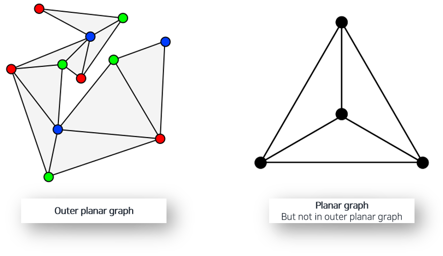
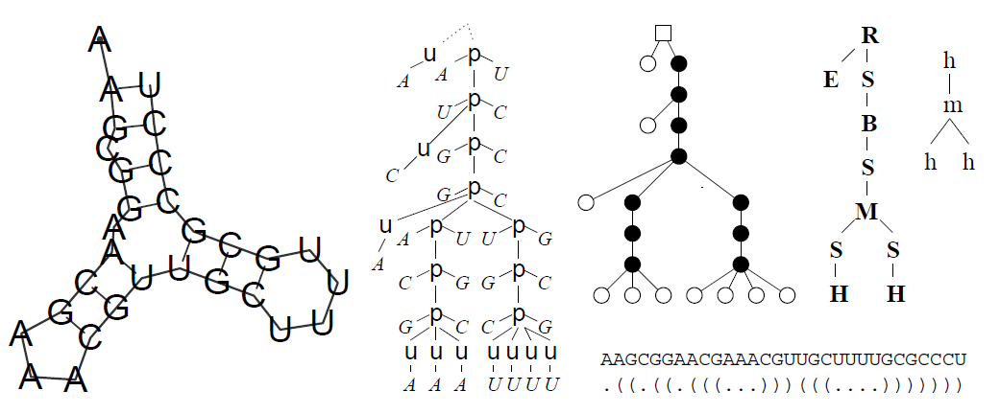

RNA Secondary Structures (1/7)¶
Information from - RNA Secondary Structures, Ivo L. Hofacker and Peter F. Stadler. Institute for Thoretical Chemistry, Universitiy of Vienna, Wahringerstrasse 17, A-1090 Vienna, Austria. Bioinformatics Group, Department of Computer Science, and Interdisciplinary Center for Bioinformatics, University of Leipzig, Hartelstrasse 16-18, D-04107 Leipzig, Germany.
1. Secondary Structure Graphs¶
1.1 Introduction¶
RNA 2차 구조¶
DNA는 이중 나선형 구조를 의미하는 double helices로 불리고 단일 가닥 구조인 RNA는 single strand로 불린다. 2차 구조를 의미하는 secondary structure란 RNA가 single strand는 DNA처럼 안정적인 구조가 아니기 때문에 접힘 현상이 발생하고, 이렇게 접힐 때 많은 영역들과 다시 결합하면서 새로운 구조를 띄게 된다. 이것을 RNA의 2차 구조라고 한다.

RNA 3차 구조(RNA Tertiary Structure)와 1>2접힘, 2>3 접힘 과정¶
어떤 상호 작용, 원인에 의해 2차 구조로 구성되어 있는 RNA가 3차원 공간상에서 다시 접힘 현상이 발생하며 생겨나는 3차원적 구조를 RNA Tertiary Structure라고 부른다
하지만 이런 3차 구조는 2차 구조보다 (결합이 느슨하거나 하여) 약하다는 특징이 있다. 그 결과 RNA 접힘 과정은 2차 구조로의 접힘과 2차구조의 3차구조로의 접힘의 계층적 과정에 의해 3차 구조로 향해 나아가는 것을 볼 수 있다
또한 RNA 2차 구조가 생성되고 3차 구조로 다시 생성되는 과정에서 2차 구조가 변하지 않기 때문에 1>2 접힘과 2>3 접힘은 독립적으로 생각 할 수 있다. 이는 다르게 말하자면 1>2차 구조의 접힘 예측과 2>3 구조의 접힘 예측을 별도의 문제로 다뤄도 문제가 없다는 뜻이다.
Functional RNAs¶
functional RNA라고 불리는 RNA를 구분하는 몇 가지 클래스들이 존재한다. 예를 들어 tRNAs, ribosomal RNAs 등이 있다. 이런 특정 RNA들은 그들의 기능을 수행하기 위해 공간 상에서 어떤 구조적 형태를 갖게 된다. 이 구조적 형태가 바로 2차 구조 혹은 3차 구조로 불리우는 것들이다
이 뿐만 아니라 다양한 이유로 2차 구조를 명확히 밝혀 내는 것은 RNA 영역의 연구에서 혁신적인 도움을 줄 수 있는 과제라고 볼 수 있다
Prediction of Structures¶
그렇다면 RNA 시퀀스를 2차 구조, 3차 구조로 접히는 현상을 규명하고 시퀀스의 2,3차 구조를 예측하기 위한 방법들은 무엇이 있는가? 더 나은 예측기를 만들기 위해서 짚고 넘어가야할 부분이다.
3차 구조의 경우 computational prediction 방법들은 난제로 남아 있다(부분적인 과제에 대한 해결만이 가능한 상황). 반면에 2차 구조의 경우 접힘 현상의 물리적 규명 뿐만 아니라 효율적인 계산 방법들에 대한 연구도 계속해서 나오고 있는 상황이다.
RNA secondary structure는 2개의 클래스로…¶
RNA 2차 구조의 구성성분을 크게 2가지로 나뉘어 진다. 이중 나선형 구조로 불리는 double helical regions(stem이라고도 불림)과 나선 구조가 아닌 부분들이다.
> Double helical regions¶
Watson-Crick의 C-G 그리고 A-U 페어로 대부분을 이루고 있으며 일부는 결합 강도가 약한 G-U 페어 (wobble pairs)로 구성된다.
위의 경우가 아닌 다른 페어들의 조합을 non-canonical 페어(표준이 아닌 조합들 정도로 해석됨)라고 부른다. 이 페어들은 2차 구조를 예측하는 과정에서는 무시한다.
**물론 이 페어들이 중요한 결합 의미를 가질 수도 있다. **
예를 들면 3차 구조로 접히는 과정에서 motif(결합 부위 정도로 해석 하면 좋을 듯)로 활용되기도 한다. 하지만 앞서 논의 되었듯이 1>2 접힘과 2>3접힘을 독립적으로 볼 수 있기 때문에 2차 구조까지 예측 하는 과정에서는 이러한 non-canonical 페어를 무시해도 된다.
1.2 Secondary Structure Graphs¶
Constraints¶
2차 구조는 대부분 bais pair들인 $\Omega$ 로 구성되어 있고 유효한 2차 구조를 만족하기 위해 몇 가지 제약사항들이 아래와 같이 존재한다
- A base cannot participate in more than one base pair, 예를 들어 $\Omega$는 시퀀스 위치들의 집합과 매칭된다. 즉 하나 이상의 페어를 갖거나 다른 2차구조와의 결합(3차 구조 접힘)은 제외하겠다는 내용이다
- Bases that are paired with each other must be separated by at least 3 (unpaired) bases
- No two base pairs ( i , j ) and ( k , l ) $\in \Omega$ “cross” in the sense that i < k < j < l. Matchings that contain no crossing edges are known as loop matchings or circular matchings.
위의 첫번째 조건은 Tertiary Structure motif들 역시 해당되며(ex. Triplets, G-quartets, etc ..), 두번째 조건은 RNA의 backbone 이 너무 날카롭게 구부러 질 수 없음을 시사한다.

마지막 조건은 위 그림에서 볼 수 있는 Pseudoknot이라는 특수한 구조에 대한 내용이다. Pseudoknot이 RNA 구조들에서 발생하는데 해당 참고 자료에서는 기본적으로 이를 tertiary structure motif로 분류하고 있다.
동시에 이를 제약사항으로 걸었는데, 이는 사용되어지는 대부분의 Dynamic programming 알고리즘들이 이러한 pseudoknot을 처리하지 못하기 때문이기도 하다. 기존의 알고리즘들이 정복하지 못한 구조를 예측하는데 성공한다면 좀 더 정확한 3차 구조의 예측 및 2차 구조 예측에 도움이 될 것으로 보인다
이러한 Pseudoknot은 RNA Tertiary Structure를 예측하기 위한 첫 걸음이라고 볼 수 있다.
Secondary Structure Graph¶

위 그림은 RNA 2차 구조를 표현하고 시각하 하기 위한 다양한 방법들이다. 왼쪽 부터 차례로 Circle Plot, Conventional Secondary Structure Graph, Mountain Plot, Dot Plot 이다. 나열된 4개 그림 아래의 표기 방식은 “Bracket Notation”이라고 불리는 방식이다.
이처럼 다양한 방식으로 2차 구조를 표현 할 수 있다. Secondary Structure Graph라고 불리는 것 역시 그 중 하나다. 오직 2개의 edge만을 가진다. 하나는 RNA 시퀀스 순서 구성을 위한 용도로, 다른 하나는 base paring들을 위해 사용된다.
RNA 2차 구조에 대한 이론적 제한 사항이나 특성들을 모델 학습에 사용하면 성능 향상에 도움이 될 수 있다
그리고 위에서 제약 조건으로 건 3번째 사항 때문에 2차 구조 그래프가 Planar Graph(평면 그래프, 두 변이 꼭짓점을 제외하고는 만나지 않는 형태의 그래프)형태를 유지 할 수 있다. 더 정확히는 Outer Planar Graph 구조를 갖는다고 볼 수 있다.

이러한 그래프 특성 덕분에 시퀀스의 backbone(순차적 연결 정보들)을 원형으로 구부려 모든 base pair들을 그리는 방식인 Circle Plot같은 시각화도 수행을 할 수 있다.
1.3 Mountain Plots and Dot Plots¶
RNA의 2차 구조를 표현하는데 사용되는 다른 방법들로는 앞선 그림에서 볼 수 있는 Mountain Plot과 Dot Plot이 있다. 간략하게 각 Plot의 특징에 대해 짚고 넘어간다.
- Mountain Plot의 특징으로는 거대한 2차 구조나 다른 구조들과의 비교를 할 경우에 적합하다는 것이다. 이 방식의경우 단일 2차 구조가 2차원 평면 그래프로 그려진다.
- Dot Plot은 각 (i, j)번째 값이 연결 정보(True/False)로 구성된 matrix이다. 간단하게 그래프의 인접행렬을 생각하면 되겠다. Dot Plot은 겹쳐진 여러 구조적 특성을 한번에 파악하기 좋은 표현 방법이다.
1.4 Trees and Forests¶
2차 구조 정보를 문자열을 활용해 효율적으로 저장하는 기법을 bracket notation 라고 한다. 해당 기법은 간략하게 설명하자면 시퀀스 위치 $i$ 가 unpaired(2차 결합 x) 부분인 경우 dot(“.”)을 기입한다. 만약 paired인 경우 연결되는 $j$의 ($i < j$라고 가정) 경우 $i$ 와 $j$ 에 각각 open bracket( “ ( “ )과 closed bracket( “ ) “ )을 기입한다.
또한 아래와 같이 트리를 이용해 2차 구조를 표현하는 방법도 존재한다.

1.5 Notes.¶
앞서 살펴 보았듯이 RNA 2차 구조는 Planar graph 형태를 취한다. 이는 2차 구조를 그려내는것에 있어 겹치는 부분이 없기 때문에 어떠한 구조던지 그릴 수 있다는 장점이 있다. 하지만 여전히 거대한 2차 구조에 대한 시각적 규명은 어려운 상태다. 이처럼 Layout algorithm들은 대부분 트리와 같은 형태를 띄다 보니 pseudoknot같은 구조에 취약하다는 것을 알 수 있다